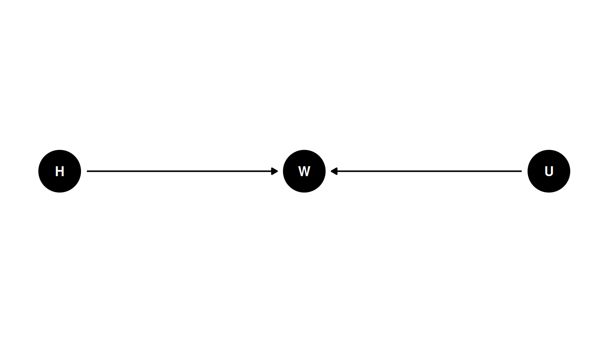

coords <- data.frame(
name = c('H', 'W', 'U'),
x = c(1, 2, 3),
y = c(0, 0, 0)
)Lecture 03 Notes
Geocentric models
Prediction without explanation. The geocentric model has epicycles and Earth is the center of the universe.
Linear regressions are geocentric - they describe associations, make predictions but are mechanically wrong. Therefore, they are useful when handled with care.
Normal distribution
Summed fluctuations tend towards the normal distribution
For estimating only the mean and variance, the normal distribution is the least informative distribution (maxent).
Note: variables do not have to be normally distributed for normal models to be useful.
Linear regression
Workflow
- Question/goal/estimand
- Scientific model
- Statistical model(s)
- Validate model
- Analyze data
Example: Howell data
1. Estimand
Describe the association between adult weight and height
2. Scientific model
How does height influence weight?
H -> W <- U
dagify(
W ~ H + U,
coords = coords
) |> ggdag(seed = 2, layout = 'auto') + theme_dag()
This DAG corresponds to: “weight is some function of height and unobserved variables” (\(W = f(H, U)\)).
\[W = \beta H + U\]
The unobserved variable U is normally distribution with a mean of 0 and a standard deviation sigma.
\[U_{i} \sim Normal(0, \sigma)\]
Height is uniformly distributed between 130 and 170 cm.
\[H_{i} \sim Uniform(130, 170)\]
There is a deterministic relationship for W and distributional relationships for U and H.
Corresponding generative code is:
sim_weight <- function(H, beta, sigma) {
U <- rnorm(length(H), mean = 0, sd = sigma)
W <- beta * H + U
return(W)
}
heights <- seq.int(10, 50)
sim_weight(heights, beta = 0.5, sigma = 0.1) [1] 4.910309 5.518485 6.158785 6.386962 6.991975 7.513242 8.070795
[8] 8.476030 9.198447 9.486121 10.041765 10.598175 10.960730 11.396033
[15] 12.178223 12.268893 13.087860 13.503581 14.101283 14.543227 15.209082
[22] 15.380007 16.158964 16.695465 17.000494 17.254829 18.047724 18.440344
[29] 19.079220 19.528964 20.073894 20.531896 21.107616 21.471584 21.922332
[36] 22.440434 22.827402 23.409742 23.944094 24.475349 24.9616413. Statistical model
\(E(W_{i} | H_{i}) = \alpha + \beta H_{i}\)
- \(E(W_{i} | H_{i})\): average weight conditional on height
- \(\alpha\): intercept
- \(\beta H_{i}\): slope
Posterior distribution
\(Pr(\alpha, \beta, \sigma | H_{i}, W_{i}) = \frac{Pr(W_{i} | H_{i}, \alpha, \beta, \sigma) Pr (\alpha, \beta, \sigma)}{Z}\)
- \(Pr(\alpha, \beta, \sigma | H_{i}, W_{i})\): posterior probability of a specific line
- \(Pr(W_{i} | H_{i}, \alpha, \beta, \sigma)\): garden of forking data, the number of ways we could see the observations, conditional on an exact line (in this case)
- \(Pr (\alpha, \beta, \sigma)\): prior
- \(Z\): normalizing constant
Alpha, beta and sigma are unobserved variables, height and weight are observed.
The posterior distribution is proportional to the product of the number of ways the observations could arise according to our assumptions multiplied by our prior.
Prior predictive simulation
What do the observable variables look like with these priors?
\(W_{i} \sim Normal(\mu_{i}, \sigma)\)
\(\mu_{i} = \alpha + \beta H_{i}\)
\(\alpha \sim Normal(0, 10)\)
\(\beta \sim Uniform(0, 1)\)
\(\sigma \sim Uniform(0, 10)\)
When height is 0, weight is 0. Weight increases on average with height. Weight (kg) is less than height (cm). Sigma must be positive.
Priors:
- no correct priors, only scientifically justifiable priors.
- justify with information outside the data, like the rest of the model
- priors become more important as models get more complex
- always simulate from the priors, better than trying to intuit what they mean from the definitions
4. Validate model
Test statistical model with simulated observations from scientific model. Stronger test: simulation-based calibration
- simulate individuals with known parameters from scientific model
- use model to determine if it can recover parameters
- use a large sample
- test with different values and sample sizes
5. Analyze the data
Once you’ve done steps 1-4, you are ready to analyze the real data.
Parameters are not independent, do not interpret them separately.
Use the posterior distribution to generate predictions on the outcome scale then describe and interpret those.